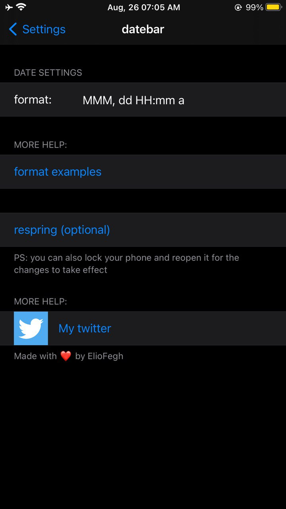

date bar
Open-Source
Github Link
Compatibility
Compatible with iOS 11 --> iOS 14.8.1
Description
adds more date to the status bar
Screenshots

Changelog
1.2-Vey big changes and bug fixing
-allow the user to choose whatever date he wants
1.1- added 3 more date styles
-added preference bundle
1.0-initial release.